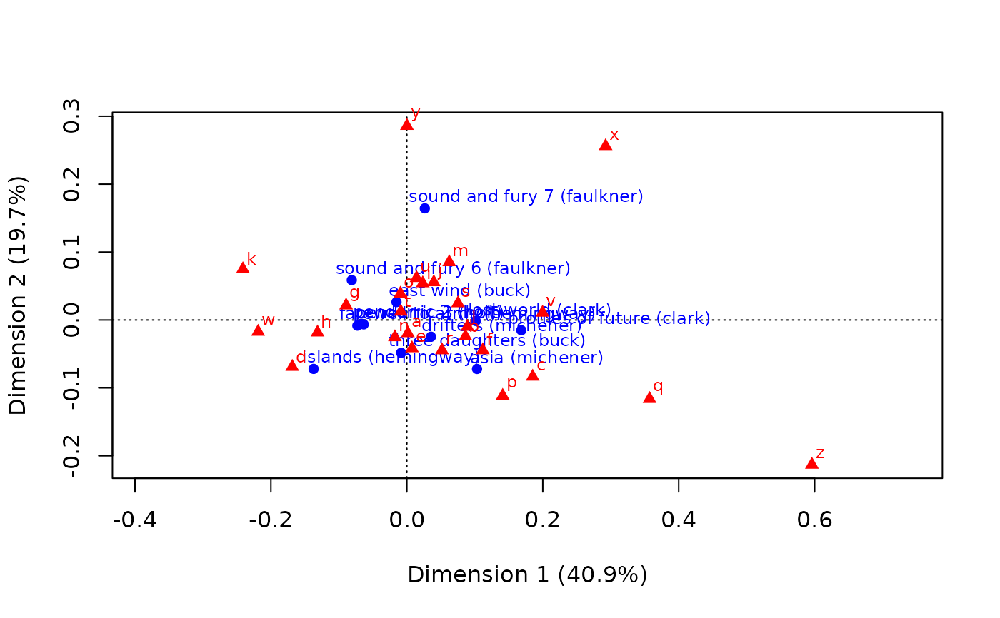
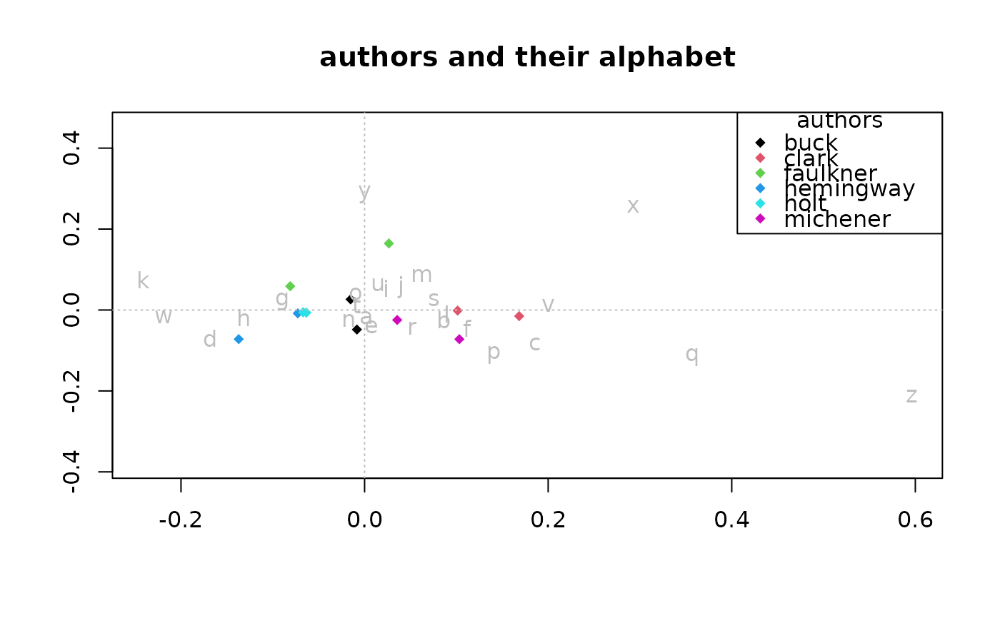

The functions row_pcoord() and col_pcoord() retrieve the coordinates of
the rows and columns of a ca object across all dimensions.
The functions xlim4ca() and ylim4ca() return the range of values for the
first and second dimensions.
Arguments
- x
An object of class
ca.- ...
Additional arguments (not implemented).
Value
A matrix (for row_pcoord() and col_pcoord()) or a numeric vector
(for xlim4ca() and ylim4ca()).
Details
In the output of row_pcoord(), each row corresponds to a row from the dataframe
that ca::ca() was applied to, and each column corresponds to a principal component.
In the output of col_pcoord(), each row corresponds to a column from the dataframe
that ca::ca() was applied to, and each column corresponds to a principal component.
Functions
row_pcoord(): Retrieve row principal coordinates for all dimensionscol_pcoord(): Retrieve column principal coordinates for all dimensionsxlim4ca(): Return range of first dimension for plottingylim4ca(): Return range of second dimension for plotting
Examples
# traditional biplot from {ca}
library(ca)
data("author")
author_ca <- ca(author)
plot(author_ca)

# alternative plot with {mclm} tools
r_pc <- row_pcoord(author_ca)
c_pc <- col_pcoord(author_ca)
xlim <- xlim4ca(author_ca)
ylim <- ylim4ca(author_ca)
author_names <- as.factor(gsub(
"^.*?\\((.*?)\\)$", "\\1",
rownames(author), perl = TRUE))
plot(r_pc[,1], r_pc[,2], pch = 18,
xlim = xlim, ylim = ylim, xlab = "", ylab = "",
main = "authors and their alphabet",
col = as.numeric(author_names))
abline(h = 0, col = "gray", lty = 3)
abline(v = 0, col = "gray", lty = 3)
text(c_pc[,1], c_pc[,2], colnames(author), col = "gray")
legend("topright",
legend = levels(author_names),
pch = rep(18, length(levels(author_names))),
col = 1:length(levels(author_names)),
title = "authors")
